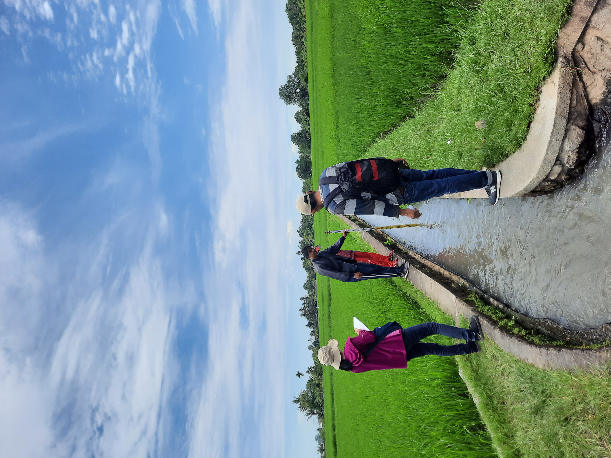
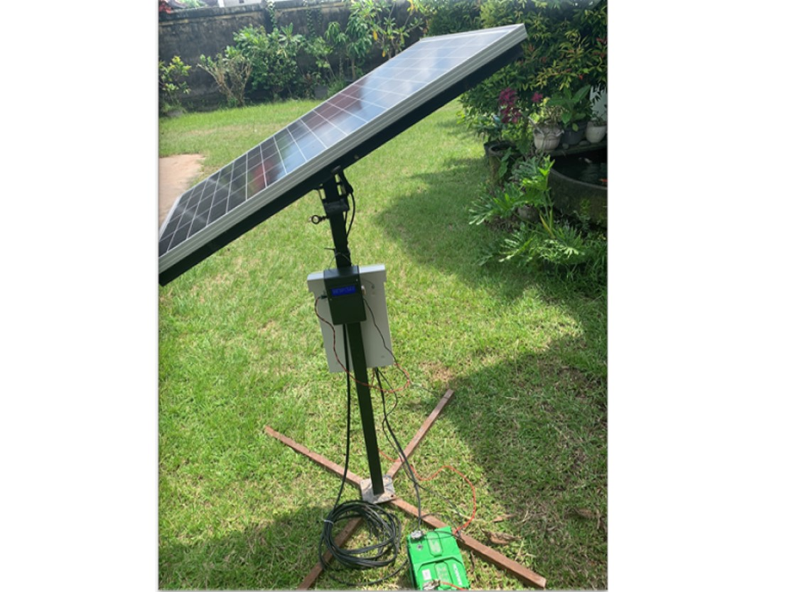
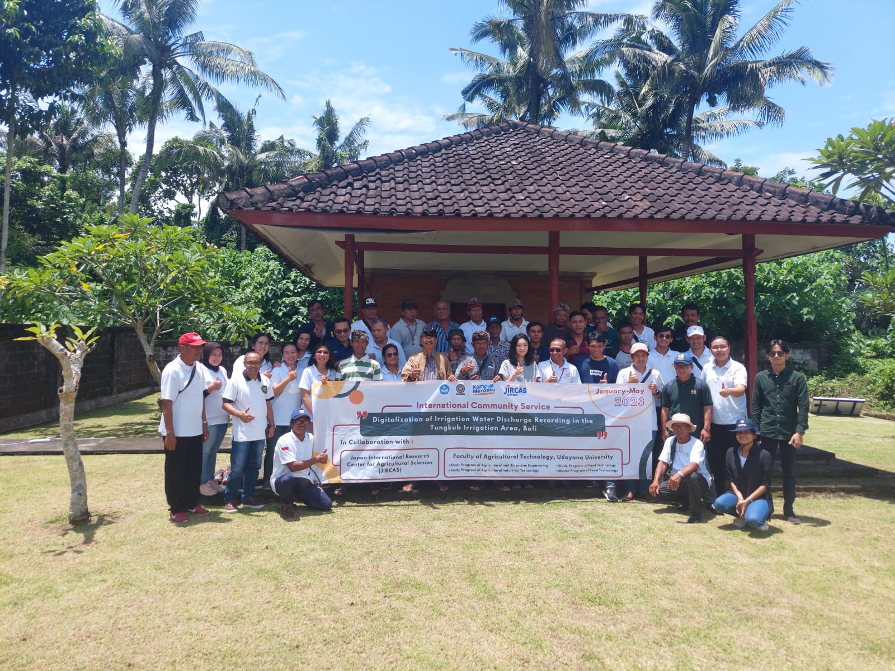

20 Maret 2023
Informasi Subak Gede Tungkub
Subak Gede Tungkub berada di 2 kabupaten yang berbeda yakni Badung
dan Tabanan, provinsi Bali. Subak ini juga terletak di Daerah Aliran
Sungai (DAS) Sungi mempunyai luasan baku 1.092 ha, yang kebutuhan
air irigasinya dipenuhi oleh Bendung Tungkub. Subak Gede ini terbagi
menjadi 6 subak yang terdiri atas Subak Tungkub Mengwi, Subak
Tungkub 1, Subak Tungkub Lanyahan, Subak Tungkub Dalem, Subak
Tungkub 2, dan Subak Tungkub 3.
Jadwal tanam di setiap Subak yang berada di Subak Gede Tungkub
memiliki waktu yang berbeda-beda. Pertama di Subak Tungkub Mengwi
memiliki jadwal tanam 5 kali dalam kurun waktu 2 tahun, yang
dilaksanakan antara bulan Maret/April, Juli/Agustus,
November/Desember. Selanjutnya di Subak Tungkub 1 memiliki jadwal
tanam pada Juni/Juli dan November/Desember setiap tahunnya. Ketiga
di Subak Tungkub Lanyahan dilaksanakan 2 kali dalam setahun pada
bulan Juni/Juli dan November/Desember. Pada Subak Tungkub Dalem
Jadwal tanamnya pada bulan Juni dan Desember. Terakhir pada Subak
Tungkub 2 dan 3 memiliki jadwal tanam yang sama yakni pada bulan Mei
dan November.

17 Maret 2023
Irrigation Monitoring Logger (IM-Logger)
Irrigation Monitoring Logger (IM-Logger) merupakan alat monitoring
pengukur debit saluran irigasi, dimana pencatatannya dilakukan
secara real-time dan dapat dipantau melalui aplikasi android. Alat
ini akan diaplikasikan pada salah satu bangunan ukur debit di Daerah
Irigasi Tungkub, Tabanan, Bali.
Alat monitoring ini dibangun dengan memanfaatkan development board
NodeMcu V3 yang mengintegrasikan mikrokontroler Tensilica 32-bit
RISC CPU Xtensa LX106 dengan ESP6266. Sensor yang digunakan untuk
mendeteksi perubahan tinggi dan rendah air adalah sensor ultrasonic
JSN-SR04T yang bersifat waterproof. Hasil pembacaan tinggi muka air
akan dimasukkan kedalam rumus hubungan tinggi muka air dan debit,
sehingga outputnya berupa debit air. Alat ini juga akan dilengkapi
catu daya dengan tenaga surya serta dapat dipantau pada aplikasi
android.

14 Februari 2023
Realisasi Kerjasama, FTP Unud Gandeng JIRCAS Jepang Melaksanakan
Pengabdian Masyarakat di Daerah Irigasi Tungkub, Mengwi Bali
Fakultas Teknologi Pertanian Universitas Udayana bekerjasama dengan
Japan International Research Center for Agricultural Sciences
(JIRCAS) telah melaksanakan kegiatan pengabdian kepada masyarakat
dengan tema Digitalisasi Pencatatan Debit Air Irigasi di Daerah
Irigasi Tungkub, Mengwi Bali pada Minggu, 12 Februari 2022 Kegiatan
ini dihadiri oleh Dekan Fakultas Teknologi Pertanian Prof.Ir. I Made
Anom Sutrisna Wijaya, M.App.Sc., Ph.D., Seluruh Wakil Dekan FTP
Unud, Seluruh Koordinator Prodi FTP Unud, Krama Subak, Pakaseh,
Pengamat Irigasi DAS Sungi Bpk Agus Mahendra dan Staff Observasi
Irigasi DAS Sungi, Dosen Fakultas Teknologi Pertanian dan Ms. Dr.
Fumi Okura dari JIRCAS dan Bapak Septian Fauzi Dwi Saputra yang
merupakan mahasiswa Tokyo University of Agriculture and Technology
(TUAT).
Kegiatan yang dilakukan adalah sosialisasi Alat Pemantau Debit Air
Otomatis, yang selanjutnya akan mencakup pelatihan penggunaan alat
tersebut serta proses Pemasangan Peralatan yang tentunya memiliki
izin dari kantor BWS (Badan Wilayah Sungai) yang nantinya melakukan
monitoring dan evaluasi terkait peralatan yang telah terpasang,
selain itu mengadakan diskusi dengan Dr. Fumi Okura dari JIRCAS
Jepang mengenai permasalahan yang dihadapi, peralatan yang akan
dipasang, dan sistem subak yang diterapkan serta kebiasaan yang
dilakukan oleh seluruh Pakaseh menurut Tempekan di Daerah Irigasi
Tungkub. Dekan Fakultas Teknologi Pertanian berharap kegiatan ini
mampu memberikan solusi atas permasalahan yang ditemukan Pakaseh di
Daerah Irigasi Tungkub, dan kedepannya diharapkan kerjasama ini
berkembang baik dalam bidang Pendidikan dan Penelitian.